28 个页面/视口组合检查通过，七页分别使用自己的参考艺术。正常动效偏好下，静置截图像素不变，无活动动画或 Canvas。首页与上轮批准截图逐像素相同。七页导航、文字/语音模拟、调整、问答、分享确认、词云与退出均通过。没有开始 Phase 2。
已知差异：字体栅格化、局部 UI 修复纹理、必要的功能小字入口与演示说明。错误的重复进度编号已规范为七个节点；没有真实匿名数据时不展示“真实回答”声明。小屏使用裁切；播放器仅静态预览，真实 AI 与视频生成尚未接入。
01 · 静态还原
参考：page 01.png。左侧参考，右侧实际网页。
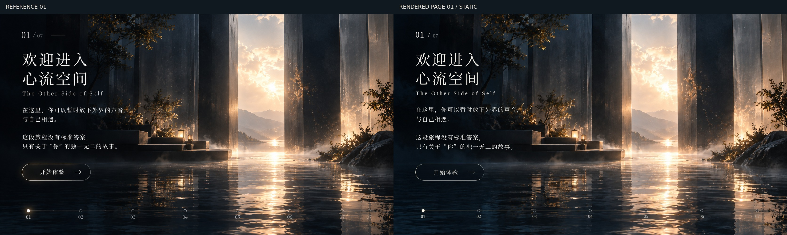
查看 1920×1080 实际网页截图
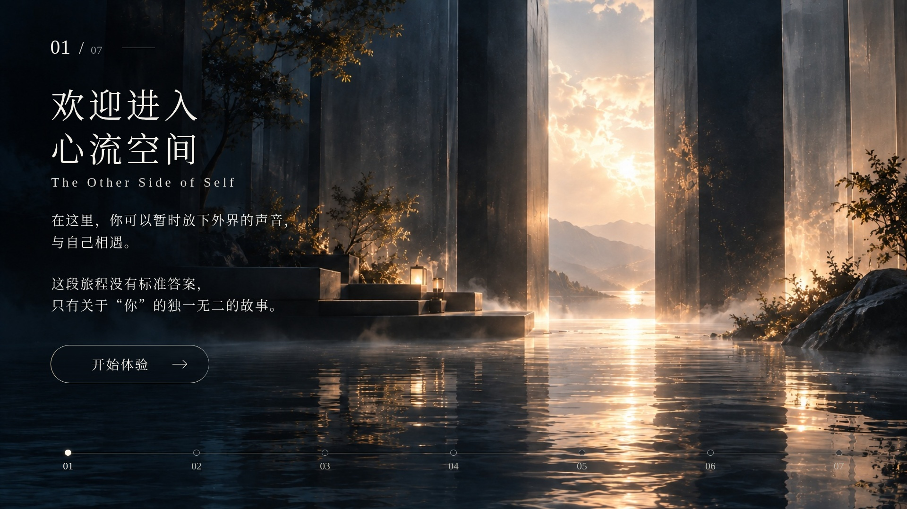
02 · 静态还原
参考：page 02 .png。左侧参考，右侧实际网页。
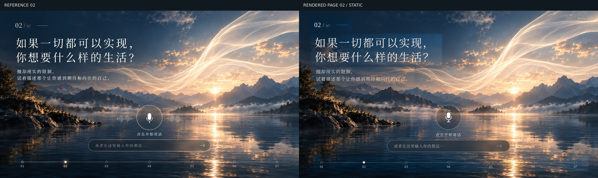
查看 1920×1080 实际网页截图
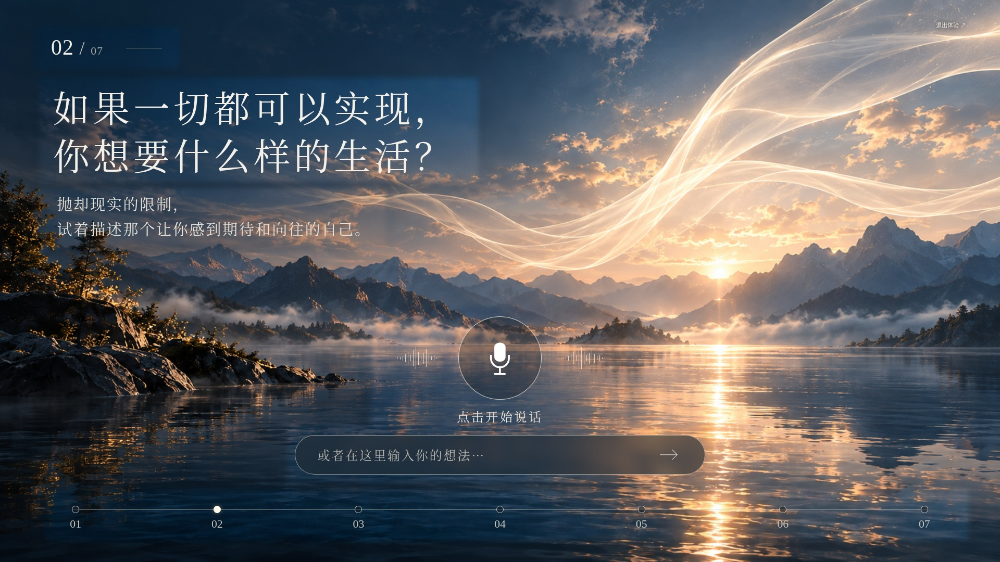
03 · 静态还原
参考：page 03.png。左侧参考，右侧实际网页。
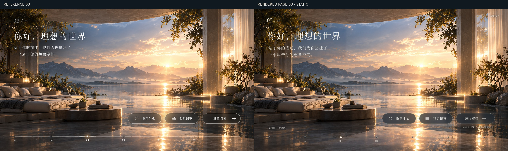
查看 1920×1080 实际网页截图
04 · 静态还原
参考：page 04.png。左侧参考，右侧实际网页。
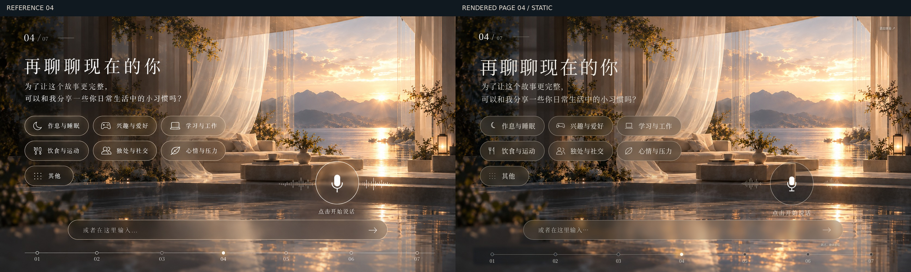
查看 1920×1080 实际网页截图
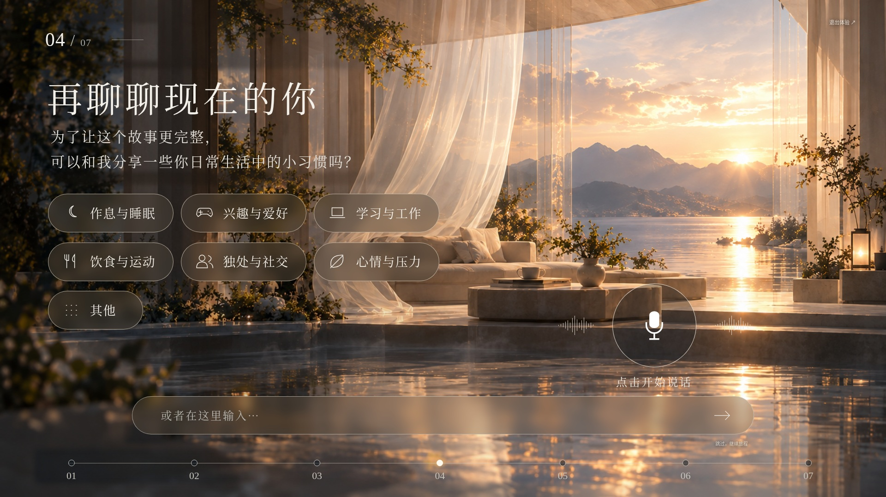
05 · 静态还原
参考：page 05.png。左侧参考，右侧实际网页。
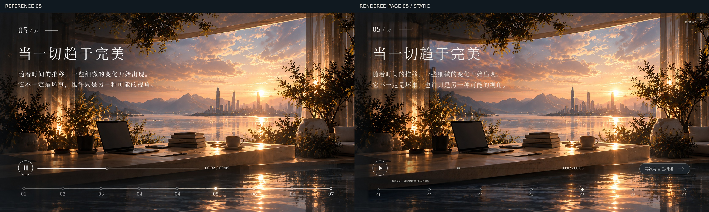
查看 1920×1080 实际网页截图
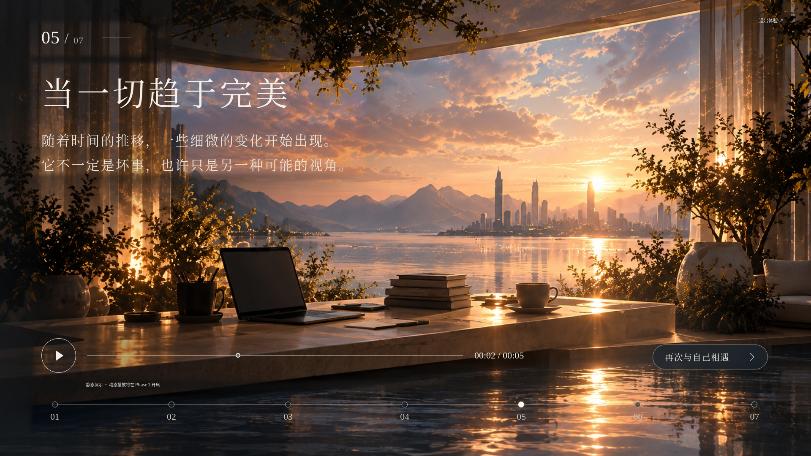
06 · 静态还原
参考：page 06.png。左侧参考，右侧实际网页。
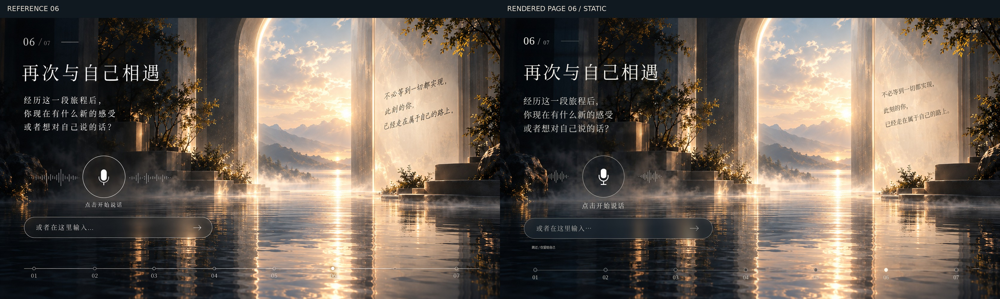
查看 1920×1080 实际网页截图
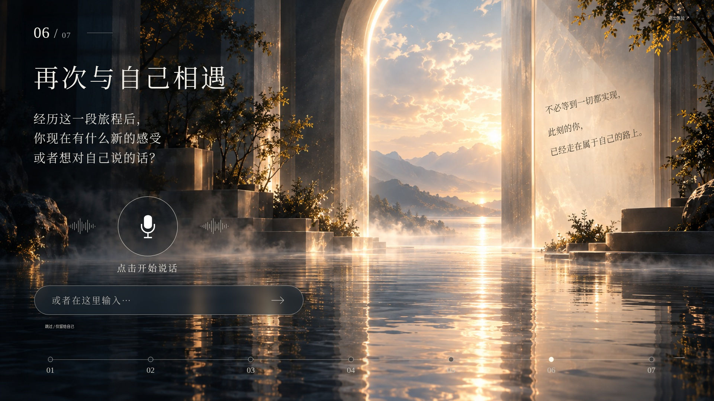
07 · 静态还原
参考：page 07.png。左侧参考，右侧实际网页。
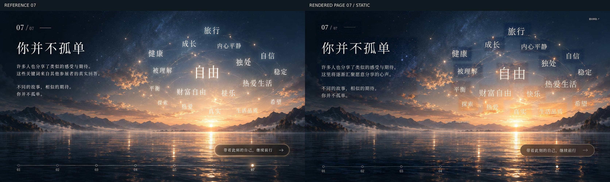
查看 1920×1080 实际网页截图
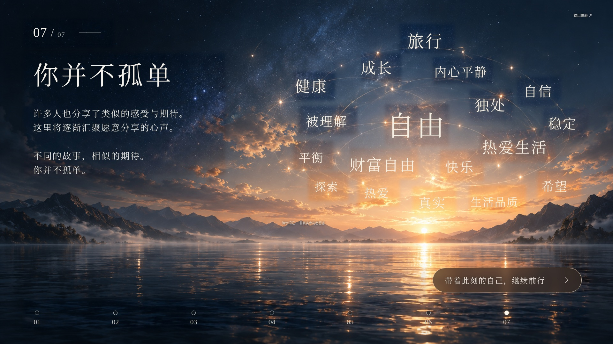